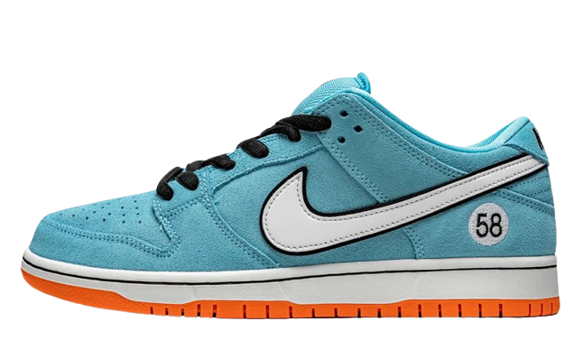

Nike Dunk
Tenis Nike Dunk Low
em seus pés. Trazendo um novo toque para os icônicos tênis de skate.A camurça Desert Ochre em áreas-chave (que lembra a metade inferior dessas mochilas atemporais) combina com tecido texturizado e durável, combinando funcionalidade com conforto. Para o toque final, um bolso oculto na língua permite que você guarde... bem, o que quiser
R$999,99